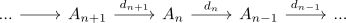
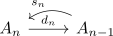

split chain complex
Definition
Let $\mathcal{A}$ be an abelian category and $\mathrm{Ch_*}(\mathcal{A})$ be the category of chain complexes and

Then the chain complex is said to be a split chain complex, if there exist morphisms
\begin{align*}
s_n: A_{n-1} \rightarrow A_{n}
\end{align*}
such that
\begin{align*}
d_n \circ s_n \circ d_n = d_n
\end{align*}
